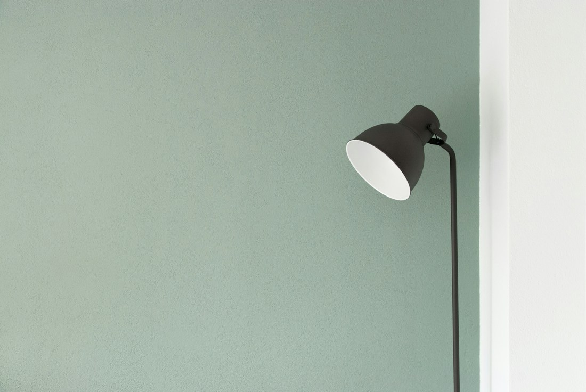
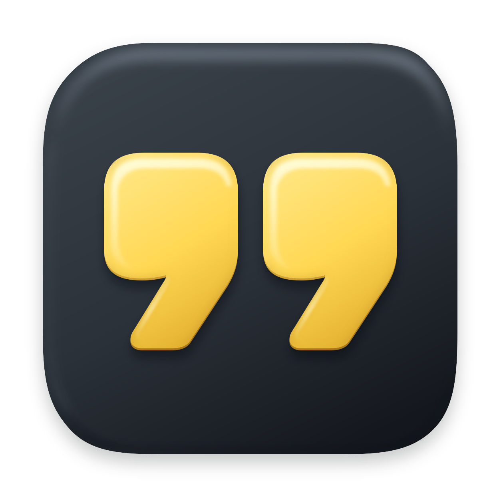

Good ideas.
Kept close.
Save the UI you love. Remember why.
Bring it into your next build.
considered.
Everyday objects.
A different perspective.

The everyday collection
Saved to Refs“The big type.
The breathing room.
That’s the feeling.”
Some things make you stop scrolling.
Keep the thing. And the thought.
that become your next big idea.
From “I like that”
to “let’s use that.”
Capture a detail, give it a little context,
and make it useful again. Try it here.
A little better.
Follow your eye.
Grab an area or a window. Refs keeps where it came from, so you can focus on what caught your attention.
Click the capture button to try the next step.
Give the idea a next life.
Copy a reference into a brief, or let your coding agent find it in your library.
An eye for detail.
A place for all of it.
Interfaces, interactions, those little moments of clarity. Keep a library that feels like you.
- Screenshots and screen recordings
- App and website sources, kept together
- Your notes, searchable when you need them
- Files stored locally on your Mac
room.
A thousand possibilities.
Your taste.
Your agent’s context.
The hard part is explaining what you mean.
Give your coding agent something to see.
Refs connects your local library to tools like Claude Code, Codex, and Cursor through MCP. Your images, sources, and notes become context for the next build.
See how to connect“Use the spacing and quiet palette from my saved studio reference.”
The reference travels with the thought.
A few good questions.
What does Refs capture?
Capture an area or a window as a screenshot, or record a silent video. Add a short note and Refs saves it with the source app or website.
Where do my references live?
On your Mac, in a local folder. You can choose the library location in Settings. Refs doesn’t need a cloud account to store your references.
How do I connect a coding agent?
Open Refs Settings → Agents for the setup instructions for your tool. The included MCP helper gives connected agents access to images, notes, and sources in your local library.
claude mcp add --scope user refs -- /Applications/Refs.app/Contents/MacOS/refs-mcpWhat do I need to run it?
The current build supports Apple Silicon Macs running macOS 14 or later. Screen Recording permission enables capture; browser Automation permission lets Refs save the website source.
Keep what catches you.
Your next idea is already out there.
Try saving a reference